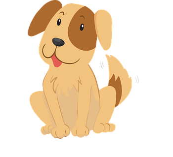
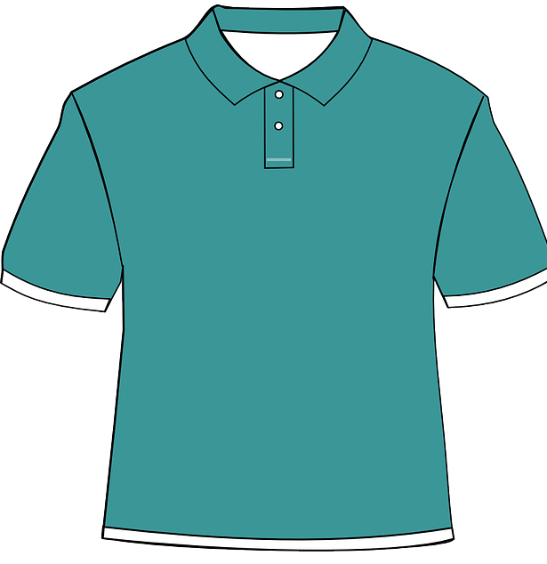
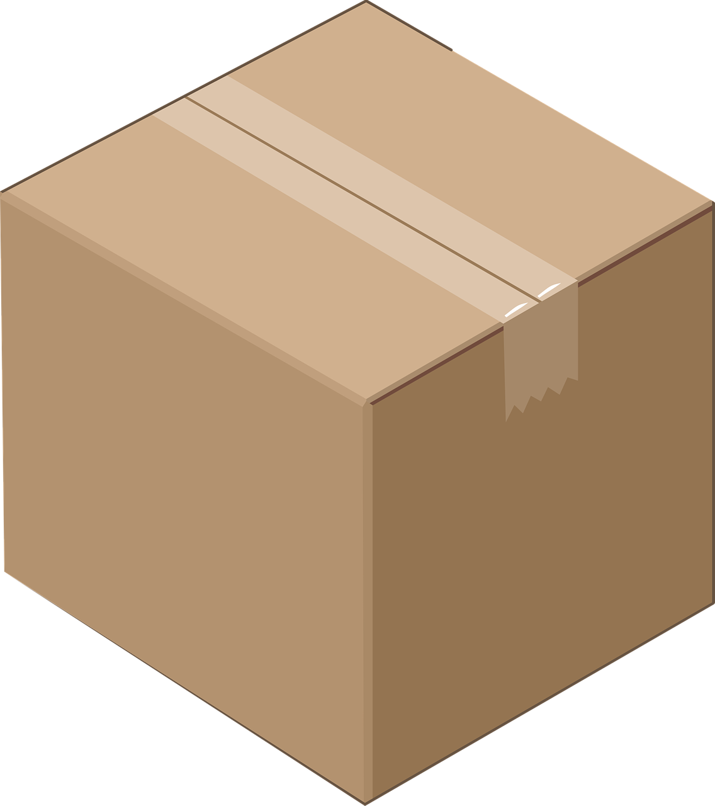
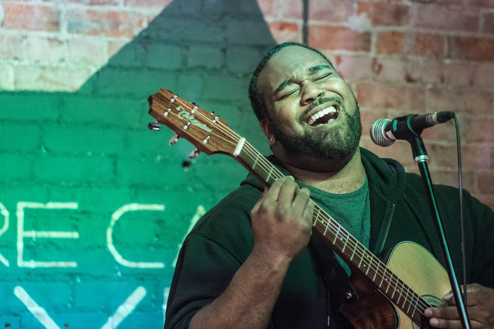

Lesson 99
-s/-es

ufliteracy.org


Lesson 99
-s/-es


See UFLI Foundations lesson plan Step 1 for phonemic awareness activity.


See UFLI Foundations lesson plan Step 2 for student phoneme responses.


kn
wr
mb
ou
ow
oi
oy
a
ea
au
aw
augh
ew
ui
ue
oo
u
ie
igh
oa
oe


See UFLI Foundations lesson plan Step 3 for auditory drill activity.

No slides needed for auditory drill.


See UFLI Foundations lesson plan Step 4 for blending drill word chain and grid.
Visit ufliteracy.org to access the Blending Board app.


See UFLI Foundations lesson plan Step 5 for recommended teacher language and activities to introduce the new concept.
Morphemes
word parts that change a word’s meaning
Suffix
morpheme added to the end of a word
-s
-es
The suffixes -s and -es change nouns from singular to plural.
cats
cat


Nouns
people, animals, places, and things
dog
shirt
box



Verbs
describe an action or something that is happening
run
sing
bite

I run.
You run.
We run.
They run.
He runs.
She runs.
It runs.
Verbs
ch
sh
wishes
fixes
passes
-es
s
x
z

classes
grows

parts
dresses
brushes
spends
shows
screams
matches
passes
rushes

See UFLI Foundations lesson plan Step 5 for words to spell.
Handwriting paper to model spelling.

See UFLI Foundations lesson plan Step 5 for words to spell.
Handwriting paper for guided spelling practice.


Insert brief reinforcement activity and/or transition to next part of reading block.

Lesson 99
-s/-es

New Concept Review

See UFLI Foundations lesson plan Step 5 for recommended teacher language and activities to review the new concept.
Suffix
morpheme added to the end of a word
-s
-es
The suffixes -s and -es change nouns from singular to plural.
cats
cat
Nouns
people, animals, places, and things
dog
shirt
box
Verbs
describe an action or something that is happening
run
sing
bite
I run.
You run.
We run.
They run.
He runs.
She runs.
It runs.
Verbs
ch
sh
wishes
fixes
passes
-es
s
x
z
girls
dresses
grows
pushes


See UFLI Foundations lesson plan Step 6 for word work activity.
Visit ufliteracy.org to access the Word Work Mat apps.


See UFLI Foundations lesson plan Step 7 for irregular word activities.
The white rectangle under each word may be used in editing mode. Cover the heart and square icons then reveal them one at a time during instruction.

See UFLI Foundations manual for more information about reviewing irregular words.
about
Lesson 98+
A represents the /ə/ or the /ŭ/ sound, depending on stress.
The white rectangle under the word may be used in editing mode. Cover the heart and square icons then reveal them one at a time during instruction.
Handwriting paper for irregular word spelling practice. Use as needed.
See UFLI Foundations manual for more information about reviewing irregular words.
Teach
The orange star indicates these are new irregular words that need to be introduced.
See UFLI Foundations manual for more information about teaching irregular words.
answer
Lesson 99+
W is silent.
The white rectangle under the word may be used in editing mode. Cover the heart and square icons then reveal them one at a time during instruction.

Handwriting paper for irregular word spelling practice. Use as needed.
See UFLI Foundations manual for more information about teaching irregular words.


See UFLI Foundations lesson plan Step 8 for connected text activities.
The girls got new dresses to match their glasses.
Chase and Finn walk their dogs on leashes.
Jane always says hello when she answers the phone.
See UFLI Foundations lesson plan Step 8 for sentences to write.

The UFLI Foundations decodable text is provided here. See UFLI Foundations decodable text guide for additional text options.
A Trip to the Football
The boys and girls of Miss Brown’s third grade class are jumping up and down with delight when the buses pull up in
front of them. All the third grade classes are going on a trip to see a football game today.
After the teachers check who is present, the students and teachers make their way onto the buses and sit down. As they drive to the football ground, the students look out the windows and sing silly songs.
When the bus pulls up, they go inside. They look at the numbers on the benches to find their seats. The game starts only minutes later. The students cheer as they watch the home team
score the first points. The home team makes some impressive kicks, bounces, and tackles.
As the game is about to end, the
classes scream with joy. They see themselves on the big screen!
On the ride back home, the students and teachers talk about the thrilling events of the day. They all agree they should take a trip to the football ground again soon.

Insert brief reinforcement activity and/or transition to next part of reading block.